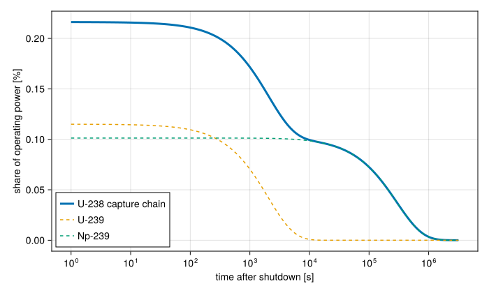

Decay heat
A reactor does not stop making heat when it shuts down. The neutron population falls away with the delayed neutron precursors, but the fission products and activated materials made while it ran keep decaying, and their radiation deposits heat in the fuel and the structures around it. This residual heat is a few percent of the operating power just after shutdown, and it decays over hours and days. Removing it, by natural circulation once the pumps have stopped, is what a loss of flow analysis is about.
This page follows the method of Python STREAM, whose documentation it adapts, and STREAM's DecayHeat module implements it.
Sources of heating
The particles that heat a reactor's components fall into three groups:
- Immediate sources appear at the moment of fission: prompt neutrons and gammas, and the kinetic energy of the fission fragments.
- Delayed sources appear later, from the decay of fission products and of activation products.
- External sources do not come from induced fission at all: a startup neutron source, spontaneous fission. They are usually negligible and are not modelled.
The immediate and delayed sources both trace back to fission, so each is written per fission event and multiplied by the fission rate.
The fission rate
Let $F(t, T)$ be the decay heat per fission, in MeV, a time $t$ after shutdown from an operating period $T$ at constant fission rate. The decay heat power is
\[P_\text{DH}(t) = \Phi\,F(t, T), \qquad \Phi = \frac{P_0}{Q},\]
where $P_0$ is the operating power and $Q$ the total recoverable energy per fission, about 200 MeV. $\Phi$ is the fission rate in units that make MeV per fission into the units of $P_0$. The decay heat per fission is a sum of contributions:
\[F(t, T) = F_\text{fissions}(t) + F_\text{fission products}(t, T) + \sum_i F_{\text{activation},\,i}(t, T).\]
Which contributions to include, and with what weight, depends on the component: the fuel receives the beta and most of the gamma energy of its fission products, a reflector only some of the gamma energy. Choosing them is the analyst's job. STREAM supplies the contributions, which add and scale like numbers, so fp + 0.3 * act is a valid total.
The decay law
Every contribution below rests on one equation. A nuclide made at a rate $R$ and decaying with constant $\lambda$ changes in number as
\[\frac{dN}{dt} = R - \lambda N.\]
During an operating period $T$ at constant power, $R$ is constant, and starting from none the inventory builds up towards its saturated value $R/\lambda$: $N(T) = (R/\lambda)\,(1 - e^{-\lambda T})$. After shutdown $R = 0$, and it decays: $N(T + t) = N(T)\,e^{-\lambda t}$. Each decay releases an energy $E$, so the heat it gives off is $\lambda N E$:
\[P(t) = R\,E\,\left(1 - e^{-\lambda T}\right)e^{-\lambda t}.\]
A nuclide with a half-life short next to $T$ is saturated and starts its decay at its full production rate. One with a half-life long next to $T$ never built up, and contributes little. This is why a reactor that ran for a short time has less decay heat than one that ran for months at the same power.
Fissions
After shutdown the fission rate itself falls with the delayed neutron precursors, and the fissions still happening deposit their prompt energy:
\[F_\text{fissions}(t) = Q_\text{prompt}\,P(t),\]
where $P(t)$ is the power from a point-kinetics solve normalised to 1 before shutdown, and $Q_\text{prompt}$ the energy a fission deposits immediately in the component. DecayHeat.Fissions samples such a profile once and interpolates it afterwards.
Because a shut-down fission rate is a sum of decaying exponentials, STREAM interpolates the logarithm of the profile by default (DecayHeat.LogLinear), which is exact for one exponential. Python STREAM interpolates linearly, which overshoots between samples; pass DecayHeat.Linear to match it. On a step insertion of -0.005 sampled every 2 s over 100 s, compared with a grid eight times finer, linear interpolation is off by up to 12% after the first interval, against 3.6% for the logarithmic form, and after the fifth interval by 3.2% against 0.29%. Neither rescues a grid too coarse across the prompt drop: under the same insertion the power falls tenfold in the first 2 s interval, and both are wrong by more than 100% inside it. Sample densely near shutdown, or on a logarithmic grid, if the first seconds matter.
Do not add it to a model that already runs point kinetics. In a model whose fuel is heated by a PointKinetics, the kinetics already compute the fission power after a scram, delayed neutrons included. Adding $F_\text{fissions}$ would count it twice. It is for models that prescribe the power rather than compute it.
Fission products
The largest contribution is the beta and gamma decay of fission products. There are hundreds of them, each following the decay law with its own yield, decay constant and energy, many in chains where one decays into the next. Summed up, the result is a smooth function of time, which the standards fit as a sum of the decay law's exponentials, one per group $i$:
\[F_\text{fission products}(t, T) = \sum_i \frac{\alpha_i}{\lambda_i}\,e^{-\lambda_i t}\left(1 - e^{-\lambda_i T}\right),\]
with $\alpha_i$ in MeV per fission per second and $\lambda_i$ in 1/s. The factor $1 - e^{-\lambda_i T}$ is how far the group has built up during the operating period: a group with a half-life much shorter than $T$ is saturated, one much longer has barely started.
DecayHeat.FissionProducts reads the groups of three standards:
- ANSI/ANS-5.1-1973 (American Nuclear Society, 1973),
- ANSI/ANS-5.1-2014 (American Nuclear Society, 2014),
- JAERI-M 91-034 (Tasaka et al., Mar 1991).
The American standards give the beta and gamma energy together and are meant for fuel. The beta energy is deposited locally while the gamma energy travels, so a component that is not fuel should take only the gamma part, which JAERI gives separately, and is included mainly for that reason. Some JAERI fits have negative $\alpha_i$: they are least-squares coefficients, not physical group strengths, and only their sum means anything.
The standards are published documents that STREAM does not distribute. Point DecayHeat.standards_dir! at a directory holding the tables, or set the STREAM_DECAY_HEAT_STANDARDS environment variable. FissionProducts(λ, α) takes groups directly, for a fit the standards do not cover.
Activation
A material activated at a constant rate during operation decays as
\[F_\text{activation}(t, T) = e^{-\lambda t}\left(1 - e^{-\lambda T}\right),\]
the decay law per unit of $R E$, normalised to 1 at saturation and shutdown: multiply by the energy per decay and the activation rate per fission. DecayHeat.Activation is this profile.
When the activated isotope decays into another radioactive one, the daughter is made by the parent's decay, $dN_2/dt = \lambda_1 N_1 - \lambda_2 N_2$. Solving this Bateman equation along with the parent's gives DecayHeat.DoubleDecay, with the parent's and daughter's decay constants $\lambda_1$ and $\lambda_2$:
\[F(t, T) = \frac{\lambda_1\,e^{-\lambda_2 t}(1 - e^{-\lambda_2 T}) - \lambda_2\,e^{-\lambda_1 t}(1 - e^{-\lambda_1 T})}{\lambda_1 - \lambda_2}.\]
The expression cancels as the two rates approach each other, so within a relative $10^{-6}$ STREAM switches to its equal-rate limit. Python STREAM does not guard this case.
ANS-5.1-2014 adds one activation chain to the fission products for fuel: neutron capture in U-238 makes U-239, which decays to Np-239, which decays to Pu-239. DecayHeat.U238CaptureChain takes the number of captures per fission $R$ and gives
\[F(t, T) = R\left[E_\text{U239}\,A(t, T; \lambda_\text{U239}) + E_\text{Np239}\,D(t, T; \lambda_\text{U239}, \lambda_\text{Np239})\right],\]
with $E_\text{U239} = 0.460$ MeV and $E_\text{Np239} = 0.405$ MeV per decay. The two terms have very different time scales, U-239 with a half-life of 23.5 minutes and Np-239 of 2.36 days:
using STREAM, CairoMakieCairoMakie.activate!(type="svg")R, Q = 0.5, 200.0 # captures per fission, MeV per fissionchain = DecayHeat.U238CaptureChain(R)u239 = R * 0.460 * DecayHeat.Activation(4.91e-4)np239 = R * 0.405 * DecayHeat.DoubleDecay(4.91e-4, 3.41e-6)t = 10 .^ range(0, 6.5; length=300) # 1 s to about 37 daysfig = Figure(size=(700, 420))ax = Axis(fig[1, 1]; xscale=log10, xlabel="time after shutdown [s]", ylabel="share of operating power [%]")lines!(ax, t, 100 .* chain.(t) ./ Q; label="U-238 capture chain", linewidth=3)lines!(ax, t, 100 .* u239.(t) ./ Q; label="U-239", linestyle=:dash)lines!(ax, t, 100 .* np239.(t) ./ Q; label="Np-239", linestyle=:dash)axislegend(ax; position=:lb)fig
The chain holds a little over 0.2% of the operating power for the first minutes, drops as U-239 decays, and the Np-239 term then carries it for days.
Feeding decay heat to a model
A contribution gives MeV per fission as a function of time since shutdown. A model wants a power, as a function of its own clock. DecayHeat.DecayHeatSource converts one into the other:
\[P_\text{input}(t) = \Phi\,F\big(\max(t - t_\text{shutdown}, 0),\; T\big),\]
and is handed to PointKinetics as its power_input, so that the total power $P = P_n + P_\text{input}$ heats the fuel (see Point kinetics and feedback).
The shutdown time $t_\text{shutdown}$ is read off the StateMachine that controls the reactor: it is when the machine entered a shutdown state, such as :SCRAM. Until then the decay time is zero and the source holds its saturated value $F(0, T)$, which is the decay heat a reactor at power carries. Two things follow. The source is continuous across the trip, with only its slope changing. And a steady state before the trip is exact: part of the operating power is decay heat, and point_kinetics_steady_state gives fission the rest.
References
- Tasaka, K.; Katakura, J.; Yoshida, T.; Kato, T. and Nakasima, R. (Mar 1991). Recommended Values of Decay Heat Power and Method to Utilize the Data. Technical Report JAERI-M 91-034 (Japanese Nuclear Data Committee, Japan Atomic Energy Research Institute). Also NEANDC(J)-161/U, INDC(JPN)-149/L. The fitting constants are in Table 4.16, p. 77.
- American Nuclear Society (1973). Decay Energy Release Rates Following Shutdown of Uranium-Fueled Thermal Reactors. Technical Report Proposed Standard ANS-5.1 (American Nuclear Society). October 1971, revised October 1973.
- American Nuclear Society (2014). Decay Heat Power in Light Water Reactors. Technical Report ANSI/ANS-5.1-2014 (American Nuclear Society).